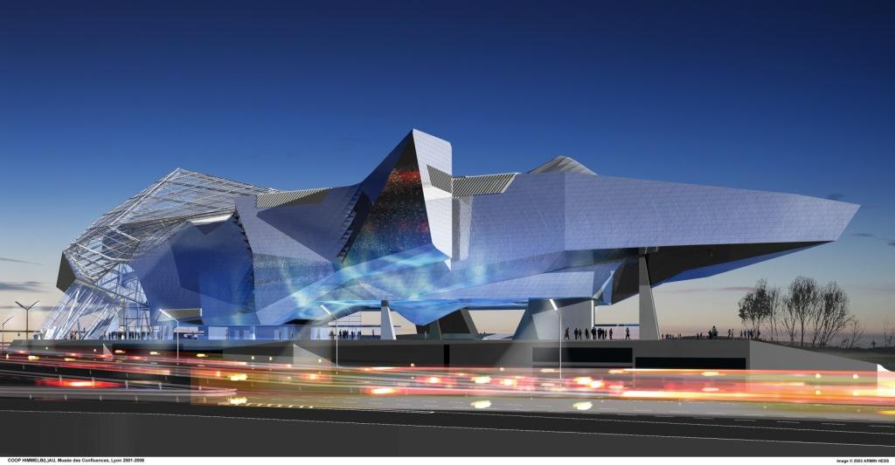

the Museum of Confluence is the most recent building of the list, in fact it was finished in 2014.

As you can see, it doesn't look like the style of the city. In fact, it's a new district of the city, really modern.
it was created by Coop Himmelb(l)au, an architect agency. It is in Deconstructivism style.